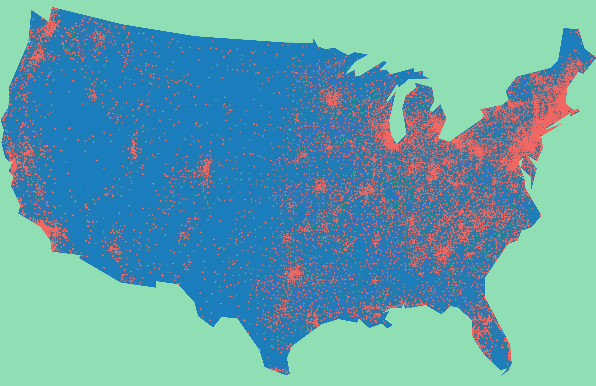

Galaxy Brains
BY Kevin Litman-Navarro
Published August 18, 2018
‘UFO’ is an odd term. To call something a UFO is to say almost nothing. Taken literally, “I saw a UFO,” is basically the same as saying, “Something was flying.”
But the definition of a UFO — Unidentified Flying Object — belies the actual meaning of the acronym. When someone says they saw a UFO, what they really mean is, “Something was flying, and I'm not saying it was an alien ship, but it was suspicious, and hey, I'm just asking questions.”
Some of these intrepid inquisitors, upon spotting a UFO, share their experiences on the National UFO Reporting Center's (NUFORC) online database. Over one hundred thousand sightings have been reported, dating back to the 1960s, by people all across the United States.
Reported UFO sightings in the United States since 1990
SOURCE: NUFORC
Until 2014, UFO sightings were clearly on the rise. And it's not a regionally restricted phenomenon. In fact, thie sightings are spread pretty evenly across the country. Where there are people, people will see UFOs.
Reported UFO sightings in the United States since 1970
SOURCE: NUFORC
Of course, when most people say they have seen a UFO, they aren't talking about a bonafide, Independence Day-style, take-over-your-planet kind of spaceship. Usually, it's a flicker of light, or shape spotted out of the corner of one's eye that is described on the NUFORC database.
The UFO shapes people have seen
SOURCE: NUFORC
As the chart above shows, a sizable proportion of the UFO spotters describe seeing a mysterious light in the night sky. Most of the written descriptions similarly focus on bright flashes of light, against the darkness of space. Scroll down to see the top words used to describe UFO encounters.